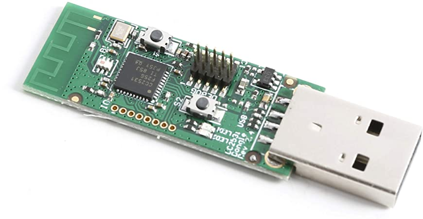
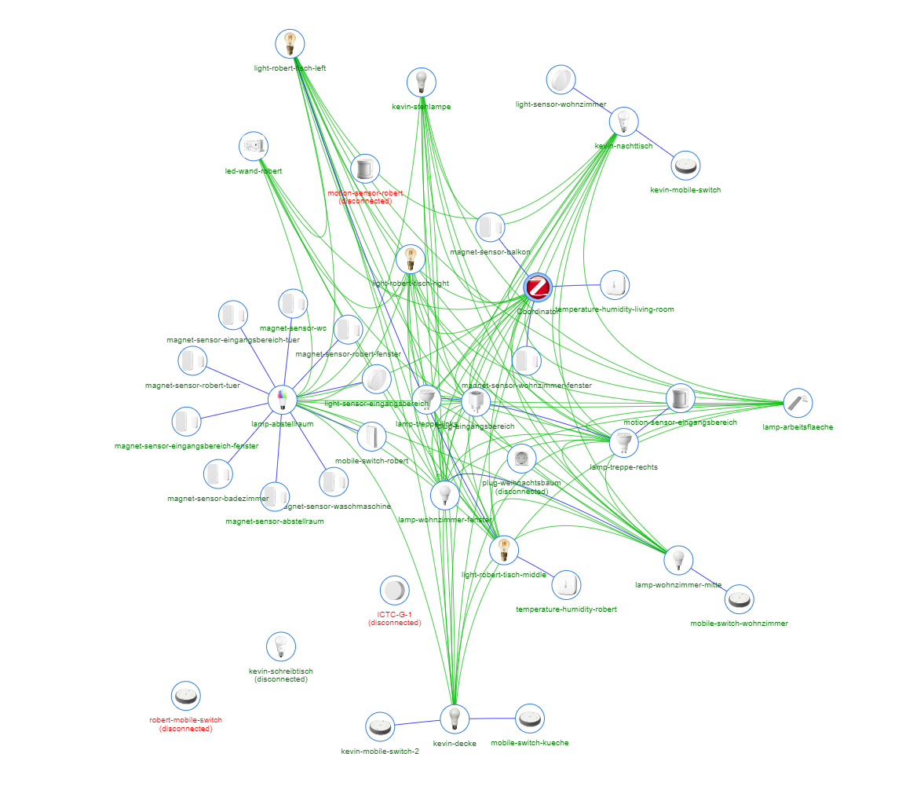

ZigBee
Mobile Computing
Kevin Sieverding
2021-10-29
Überblick
- Nach
IEEE 802.15.4standartisierte Funktechnologie - Für Netzwerke mit mittlerer Reichweite und geringen Übertragungsraten
- Fokus liegt auf Energieeffizienz
Einsatzgebiete
- Sensornetzwerke
- Güterüberwachung
- Gebäudeüberwachung
- Gebäudeautomatisierung
- IKEA Tradfri
- Philips Hue
- etc.
Fakten
| Standard | IEEE 802.15.4 |
| Frequenz | 2400 MHz, 868 MHz (Europa) |
| Reichweite | 10–75 m |
| Übertragungsrate | max. 250 kb/s |
| Topologie | Stern, Baum, Mesh |
| Stromverbrauch | sehr gering |
Aufbau

Gerätetypen
Koordinator
- Organisiert das Netzwerk
- Routing-Tabellen
- Teilnehmer-Listen
- Nur einer pro Netzwerk
→ Single Point of Failure
Beispiel: Koordinator

Full Function Device
- Kann Senden und Empfangen
- Agiert zusätzlich als Router
- Dient der Erweiterung des Netzwerks
- Können zusätzlich Steuerungsaufgaben übernehmen
Beispiel: Full Function Device

Reduced Function Device
- Kann Senden und Empfangen
- Kann keine Nachrichten weiterleiten
Beispiel: Reduced Function Device

Netzwerktypen
Beacon-Netzwerk
- Regelmäßige “Beacons” (Heartbeat) Nachrichten vom Koordinator
- Zur Synchronisation des Netzwerks
- Um einen Überblick über die Devices im Netzwerk zu erhalten
Non-Beacon-Netzwerk
- Keine regelmäßigen “Beacons”
- Ressourcensparender
- Geräte verbinden sich mit dem Netzwerk, wenn sie tatsächlich etwas senden müssen
Beispiel: ZigBee Home Automation Netzwerk

